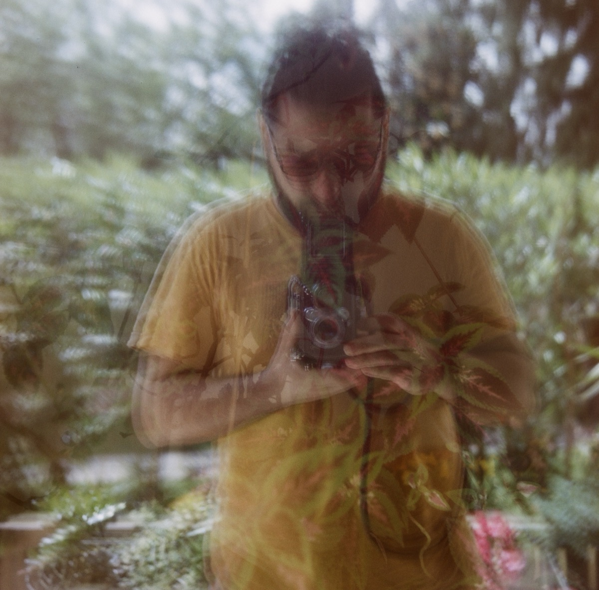
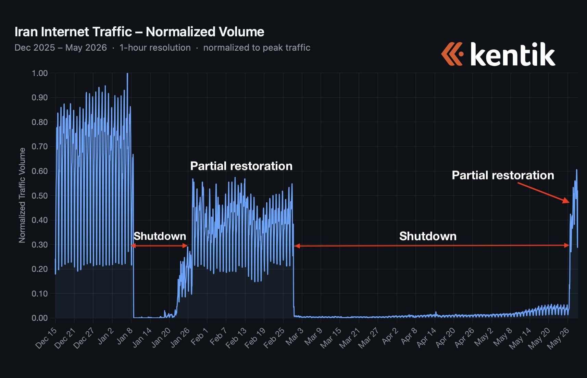
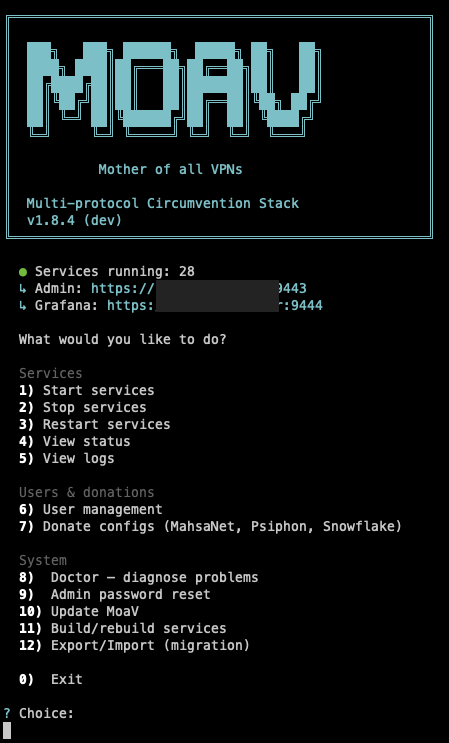
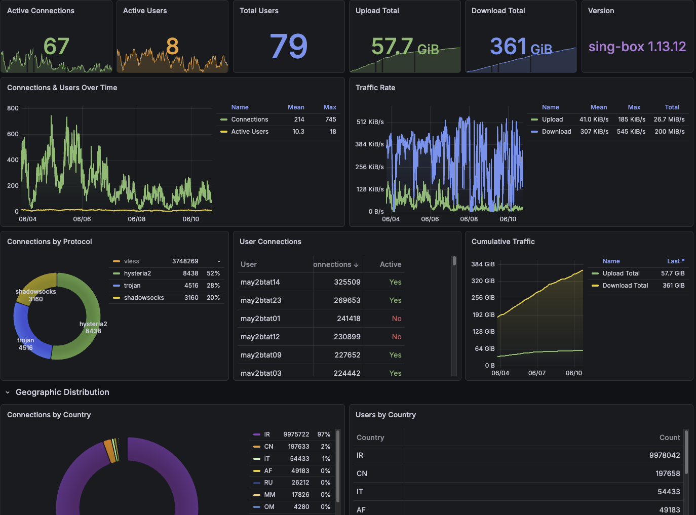
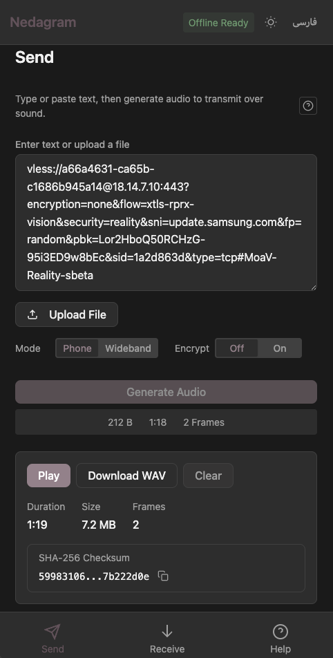
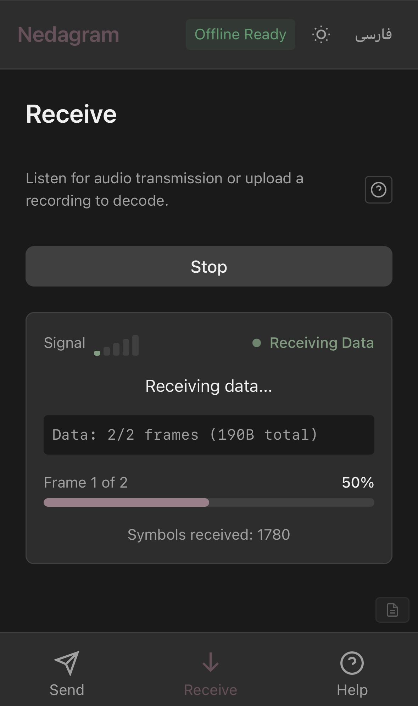
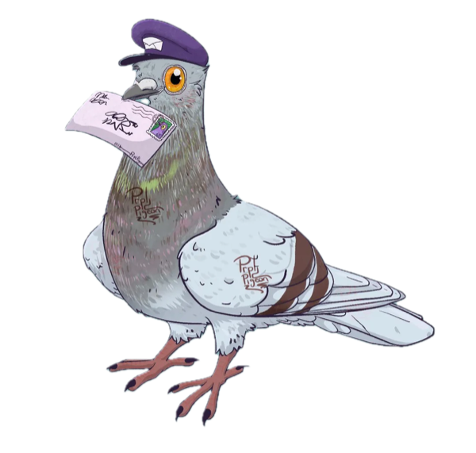

Rage-coding the Mother of all VPNs
(the mad scientist shit that matters)

who's talking
Shayan Eskandari
shayan.essecurity researcher · hacker · educator · human-centered technologist
⌁ PhD on blockchain's unforeseen consequences: front-running, oracle failures, the dark sides of permissionlessness.
⌁Blockchain Engineer building Bitaccess (BTM), Smart contract Security at ConsenSys Diligence, CTO at Ether Capital, one of the first publicly-traded ETH staking operations (36k ETH) and more...
⌁ Teaching Farsi speakers crypto since 2015 through CoinIran Academy and Shir Ya Khat podcast. Co-founded IranUnchained (Moloch-v3 NGO).
⌁ Current obsession: Internet Freedom · moav.sh
off the terminal: analogue photography and a camera collection that's gotten out of hand.
The pattern
Iran has been going dark for over two decades
Each time: harder. Each time: they learn.
SOURCESNetBlocks · Amnesty · Article 19 · Reuters · Iran Human Rights · HRANA · Wikipedia:“Internet censorship in Iran”
2026
This year, the worst on record
Iran international connectivity
Dec 2025 – June 2026

Cut the internet and the need doesn't vanish. It leaks out the nearest crack.
SOURCESTraffic: Kentik / Doug Madory · blackout: NetBlocks · Azerbaijan routing: digimpactlab.substack · Kolbars: Qalandar et al., CHI '26
Not just Iran
Internet censorship is becoming the global default
Every spike is a population fleeing to a free internet
Different flags, same playbook. Control the network, Control the people.
SOURCESVPN-demand surges: Top10VPN · shutdown context: NetBlocks · Wikipedia: “Internet shutdowns”
Enshittification · part 1
The internet infrastructure is rotting
The platform lifecycle
- 1Be good to users.
- 2Capture users.
- 3Abuse users to serve business customers.
- 4Abuse business customers to extract value.
- 5The platform rots. --Giant pile of Shit--
The same arc is the whole history of the internet:
— Cory Doctorow, enshittification
SOURCETerm: Cory Doctorow — “Enshittification” (2022)
Enshittification · part 2
Web3 forgot the promise
1993 · cypherpunks writing code
"We are defending our privacy with cryptography."
→ remailers · signatures · electronic money · communications privacy across borders
2026 · the deck
INSTITUTIONAL PRIVACY SOLUTIONS™
“Privacy-as-a-Service.” SOC 2-ready confidential compute, sold to BlackRock, never to a person who needs it.
Same movement, 30 years apart. This isn't cypherpunk anymore, right?
The gap
We "built" the top of the stack and forgot the rest
Where we've been building — 15 years
Where we forgot — the adversary owns this
Cut the bottom and everything above it vanishes. a failure of imagination about who the adversary could be.
Rage coding · why
I felt hopeless. So I rage coded.
I'm Iranian diaspora, for more than a decade, I've been teaching Farsi speakers the whole Web3 tech stack.
When the blackout came, it was all worthless. I couldn't reach my own family. My messages weren't blocked, they just weren't delivered.
So I rage-coded. Not for a financial future, for a better now, and my own sanity.
the shutdown, and what I did
The macro timeline, lived personally. You never fail until you stop trying.
One command
Turn anyone into an arsenal of VPN protocols
Not the best protocol — every protocol. 16+ running at once.
The censor has to block every one. You only need one to get through.
A stranger with a spare VPS becomes infrastructure — in Iran one shared node ran a household, a classroom, a whole neighborhood; one seller served hundreds of thousands.
MoaV — Mother of All VPNs.
How it works · the race
The window opens for days. You have to be ready.
Find a crack
Scanners inside Iran sweep for IP ranges still reachable during the blackout — sometimes a whole cloud region (e.g. Azure North Africa) is briefly open.
Land an IP inside it
Hard problem #1: actually get a VPS with an IP inside that open range before it's closed.
Beat the clock
Hard problem #2: the crack stays open only a few days. The moment you have it, traffic has to flow — now.
One command stands up the whole stack — and starts donating bandwidth to anti-censorship protocols + hands even a non-technical person config bundles that imports into every VPN client. Online in minutes, not days.
How it works · anatomy
One box, every route out
⚠ behind the wall · people inside the censored region
 v2rayNG
v2rayNG NekoBoxsing-boxHappClashWireGuardStreisand
NekoBoxsing-boxHappClashWireGuardStreisand AmneziaWGTrustTunnelMahsaNGMahsaNet
AmneziaWGTrustTunnelMahsaNGMahsaNet
Stealth proxy
Full VPN
Specialty
DNS floor · port 53
Bandwidth donation
Conduit → Psiphon Snowflake → Tor MahsaNet → configsARCHITECTUREgithub.com/shayanb/MoaV · moav.sh/docs · stealth-first: it all looks like normal HTTPS, DNS, or a video call
MoaV · what it actually looks like
One command. Then it just runs.


Admin dashboard
Add or revoke users, hand out config bundles (complete guide included for each protocol with detailed instructions), watch live traffic, toggle donations.

Grafana metrics
Per-protocol throughput and GeoIP — who’s connecting, from where, using which protocol, in real time.
The whole focus is UX, for the server operator and the end user alike. Config bundles are generated so even your grandma can get online on her phone 🤞
The arms race
They block the obvious. Creative resilience routes around it.
Step 1 — DPI fingerprints each protocol
Step 2 — hide inside the infrastructure they can't switch off, because they need it too
Reads your TLS handshake
SNI Spoofing
A decoy ClientHello says update.samsung.com. The real connection runs underneath.
Can't afford to block
GooseRelay
Exits via script.google.com — Google Apps Script, similarly Google drive API was open for a few days.
Even the state's own app
BaleVPN
Rides Bale, Iran's approved chat app, through its WebRTC video-call. Same trick as Protozoa in China & Russia.
The floor of the network
4 DNS tunnels
One port. Kill DNS and you break your own country. Slow — but enough to file one story.
What stays up in a blackout is what the regime needs to function: DNS, Google services, even its own apps. So that's exactly where we hide.
SOURCESProtozoa: Barradas et al., ACM CCS 2020 · SNI spoofing, GooseRelay, BaleVPN: github.com/shayanb/MoaV · SHAD: Qalandar et al., CHI '26
The frontier
What's been hacked together and what's still waiting for you
Built — often by people on the inside, trying to get out
Half-built, high-risk, or still theory · YOUR MOVE
The tools that work were built by people living the blackout; what researchers now call grassroots infrastructuring: survival work
REPOSthefeed · NasNet/neighbor-link · javidnetworkwatch.com · Dial-up: FDN/Telecomix, Egypt 2011 · Survival work: Qalandar et al., CHI '26
Nedagram · Another rage-coding project in the blackout
When even SMS is gone, voice calls still carry data

Same tech NASA uses to hear Voyager from interstellar space.
Reed–Solomon error correction · ~20 bps over a noisy phone call · fully offline PWA
nedagram.com · github.com/shayanb/Nedagram
$ npm i nedagram

Neda — Persian for "voice." When the internet fails, sound finds a way.
Offline payments · homework for the room
A signed transaction is just data
Sign it anywhere, carry it over any channel, broadcast where there's signal. No product does this, and a days-long war-time outage is exactly when you'd need it.

Nedagram WhatsApp TCP over Git TCP over Google WebRTC tunnel Bluetooth LoRa meshWhere it stands
The constraint
Double-spend prevention trust anchor: a smart card or a relay that broadcasts within minutes. Cap the amount to make small-value payments work today. In a digital blackout, that's life-saving.
Two asks
1 Export-and-relay — let wallets create and hand off a signed tx to carry out-of-band.
2 ZK escrow / state-channel locks for safe low-value offline payments.
RESOURCESCashu (Chaumian ecash) · Bitcoin PSBT · BIP-174 · ERC-4337
Popup mesh
We run popup cities. Why not popup mesh?
Why Discord? The camp could run on —
Local mesh, a few shared exits
Dogfood the hard parts at the next popup —
Cypherpunks write code. Popup cities should run it, not rent it from Telegram or Slack.
Activist morale
You don't have to win. You have to make it expensive.
Every wall they build, someone climbs:
Keep raising the price. The arms race has a direction.
The friends
The community is the infrastructure
The tool could die the moment the people maintaining it burn out. In March, I almost did. Take care of each other.
What's next · the roadmap
Where MoaV goes next
MoaV Client
A cross platform app: import bundles, auto-load-balance fail-over across protocols and servers. github.com/MotherofallVPNs/moav-client
Tougher transports
More DPI-resistant protocols as the censor adapts. The arms race never stops.
Nym & Sentinel integration
DePIN/dVPN has its own complexities, key management, initial stake deposit, etc.
Telegram auto-config
A public bot that mints fresh configs on demand, so anyone gets online in seconds.
Community-funded servers
Donations covering the network's VPS costs, directly and through the MahsaNet network, so it never rides on one wallet.
Resilient by default. Built during the crisis, with the goal to serve the people.
The ask · this week
Build for the people who get cut off
Deploy tonight
A small VPS or a Raspberry Pi. Ten minutes. Enable Conduit, Snowflake, donate configs to MahsaNet.
Before you sleep, someone behind the wall is breathing through your bandwidth.
Build the hard problems
Not another DeFi protocol. The plumbing for the next blackout.
Build it now. During the crisis is too late, and the crisis is inevitable.
Fund the gap
Point treasuries, grants and bounties at the people, not the shareholders.
Not charity. The rent on a free internet.
"Cypherpunks write code." — 1993
Become the Infrastructure.
Shayan Eskandari · shayan.es · X @sbetamc
June 2026 — the window is open · ~60% connectivity and unstable · the next blackout is inevitable!